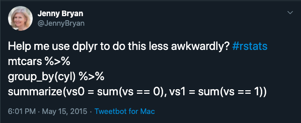
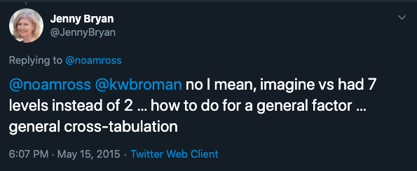
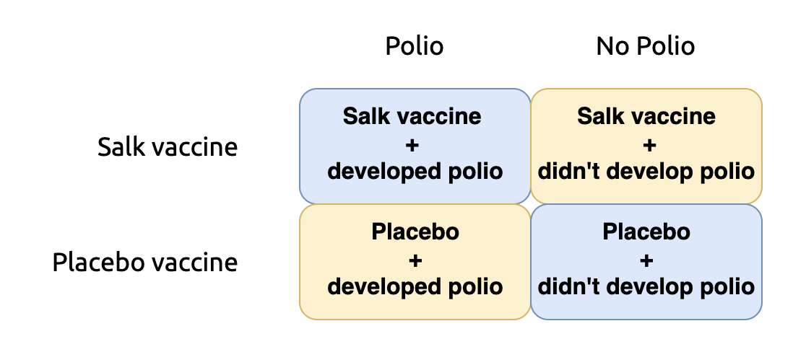
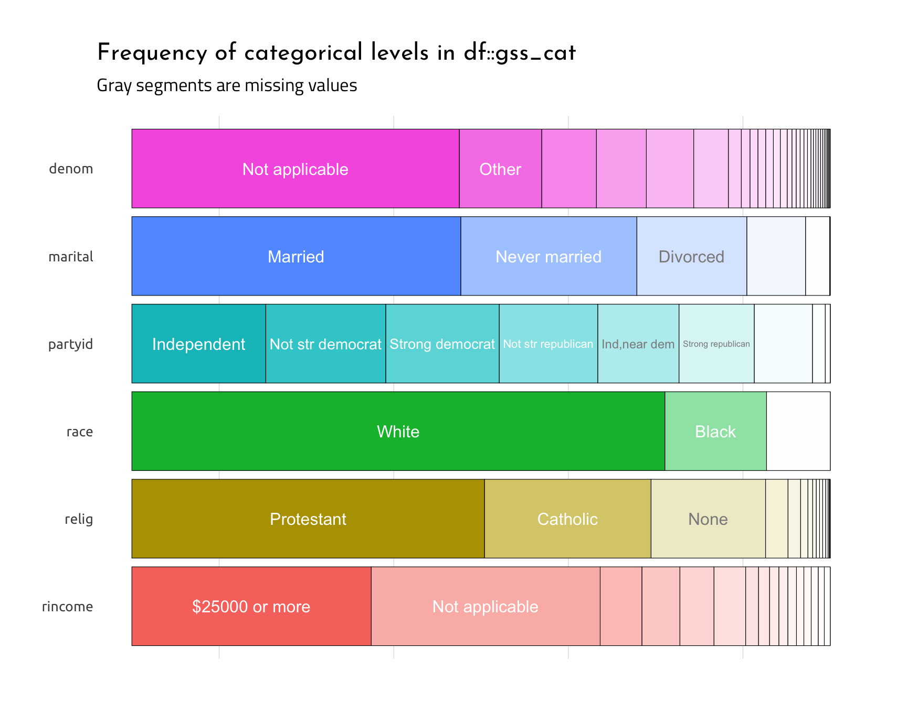

General cross-tabulations?
This post was inspired by two 2015 tweets from Jenny Bryan.
Here is the first tweet,

The original question had some follow-up clarification from Jenny Bryan, which is presented below:

Cross-tabulations (or contingency tables) are very helpful for counting things, especially if you’re dealing with categorical variables that have multiple responses.
The original tweets resulted in quite a few responses from the #rstats community for creating “general cross-tabulation[s],” all of which are summarized in this gist.
However, some great new packages have come out in the last five years! This post is an attempt to update and add to the gist with more options for creating crosstabs.
What goes in a crosstabulations?
Crosstabulations (or crosstabs) are summary tables displaying counts of categorical variables. Categorical variables typically have a defined set of known values, and the simplest of these being binary (yes/no, true/false, etc.).
Therefore, the cross-tabulation of two binary variables is sometimes referred to as a 2 X 2 contingency table.
The 2 x 2 table
We’ll start by looking at the vaccination for Polio created by Jonas Salk.
PolioVac2x2These data come from the 1955 paper by Francis et al. You might be wondering why we’d create a table like this? Well, displaying cross-tabulations allows us to see the results summarized by the experimental conditions.

In this table,
Two cells support the argument of an effective vaccine (the children getting the
Salk Vaccinedidn’t develop polio (No Polio), and the children who received thePlacebo VaccinedevelopedPolio),Two cells support the argument of an ineffective vaccine (children getting the
Placebo Vaccinedidn’t develop polio (No Polio), and the children who received theSalk VaccinedevelopedPolio),
Cross-tabulations are also used to calculate a lot of dichotomous tests, too (like sensitivity, specificity, likelihood ratios, etc).
The gss_cat data
The gss_cat data come from the forcats package, and it has sample of categorical variables from the General Social survey.
We’ll use the inspectdf::inspect_cat() plot to take a look at the levels in each factor variable.
library(inspectdf)
gss_cat <- forcats::gss_cat
gss_cat %>%
inspectdf::inspect_cat() %>%
inspectdf::show_plot(text_labels = TRUE)
This graph shows us the gss_cat dataset has six factor variables on mostly irreligious (Not applicable), Married, Independent, White, Protestant people making $25,000 or more.
Create a binary married variable
Someone told me to always name binary variables the name of the response it represents, that way I would never wonder what the 1s and 0s mean. For example, a variable named married would be 1 = “married” and 0 = “not married”.
Coding responses this way is also handy if you’re summing binary categories. Below we will create a numeric binary variable called married, which will be coded as,
"Married" = 1
"Never married"/"Separated"/"Divorced"/"Widowed" = 0
"No answer" = NA
We’ll use dplyr::mutate() and dplyr::case_when():
gss_cat <- gss_cat %>%
dplyr::mutate(married = case_when(
marital == "Married" ~ 1,
marital == "Never married" ~ 0,
marital == "Separated" ~ 0,
marital == "Divorced" ~ 0,
marital == "Widowed" ~ 0,
marital == "No answer" ~ NA_real_,
TRUE ~ NA_real_))Crosstabs with dplyr and tidyr
How would we know if we create the marital variable right?
Well, we could create a cross-tab of marital and married using dplyr::group_by() and dplyr::summarize().
gss_cat %>%
dplyr::group_by(marital, married) %>%
dplyr::summarize(married = sum(married == 1),
`not married` = sum(married == 0))How can we check our work? Well, before we do that, we will cover the differences between dplyr::group_by() + dplyr::summarize(), dplyr::count(), and the lower level function dplyr::tally().
group_by, summarize & count
dplyr::count() is really the dplyr::group_by() and dplyr::summarize() functions combined. Per the description from the help file,
equivalent to df %>% group_by(a, b) %>% summarise(n = n())
So, the call above used dplyr::group_by() and dplyr::summarize() to collapse the original gss_cat tibble into the available categories in marital and married.
We then we fed the output of dplyr::group_by(marital, married) + dplyr::summarize() to the sum() function, but we had to specify the two conditions (married == 1 and not married == 0) in order to get a 2 x 2 table.
If we compare dplyr::group_by() + dplyr::summarize(n = n()) with the numbers from dplyr::count() below, we see they are identical.
gss_cat %>%
dplyr::count(marital, married)gss_cat %>%
dplyr::group_by(marital, married) %>%
dplyr::summarise(n = n())All the categories from marital and married are accounted for.
tally
The dplyr::tally() function doesn’t do any grouping before it counts up the categorical levels, so if we try to use it like dplyr::count(), we get an error.
gss_cat %>%
dplyr::tally(marital, married)
#> Error: Problem with `summarise()` input `n`.
#> x 'sum' not meaningful for factors
#> ℹ Input `n` is `sum(marital, na.rm = TRUE)`.If we can use dplyr::group_by(marital, married) and then feed it to dplyr::tally(), it works fine.
gss_cat %>%
dplyr::group_by(marital, married) %>%
dplyr::tally()But none of these functions give us an output that distributes the categorical responses across the columns (unless we provide all levels of one of the grouped variables).
Which, as Jenny points out, would be a horrifying idea if we had a categorical variable that had multiple levels. Consider rincome (16 levels) and denom (30 levels)!
A crosstabulation gives us an idea of where the counts overlap for each response category, but so far we’ve only been able to see all possible combinations of marital and married with a single n column.
count & pivot
We can combine dplyr with tidyr to create quick cross-tabs for categorical variables. First we’ll use dplyr::count() to get the counts for each response, then we can change the structure of the output from the collapsed tibble with tidyr::pivot_wider().
For example, we can count married and marital, then pivot married responses across the columns.
gss_cat %>%
dplyr::count(married, marital) %>%
tidyr::pivot_wider(names_from = married,
values_from = n)Or we can pivot the marital categories across the columns.
gss_cat %>%
dplyr::count(married, marital) %>%
tidyr::pivot_wider(names_from = marital,
values_from = n)In both cases, we can see the each categorical level of married and marital printed to the screen, with the n for each cell.
Previous examples
Note 1) tidyr::spread() is roughly equivalent to tidyr::pivot_wider(), so these are updated versions of the previous answers below, 2) recall that mtcars is a data.frame, not a tibble, so the printing will look different.
base::class(mtcars)
# [1] "data.frame"
# group_by, summarize, and spread ---- ---- ----
mtcars %>%
dplyr::group_by(cyl, vs) %>%
dplyr::summarize(count = n()) %>%
tidyr::spread(vs, count)
# `summarise()` regrouping output by 'cyl' (override with `.groups` argument)
# # A tibble: 3 x 3
# # Groups: cyl [3]
# cyl `0` `1`
# <dbl> <int> <int>
# 1 4 1 10
# 2 6 3 4
# 3 8 14 NAAs you can see from the output above, when dplyr::group_by() and dplyr::summarize() are combined, a message tells us it would be regrouping the output tibble (we can fix this with dplyr::ungroup() or .groups).
# group_by, tally, and spread ---- ---- ----
mtcars %>%
dplyr::group_by(cyl, vs) %>%
dplyr::tally() %>%
tidyr::spread(vs, n)
# # A tibble: 3 x 3
# # Groups: cyl [3]
# cyl `0` `1`
# <dbl> <int> <int>
# 1 4 1 10
# 2 6 3 4
# 3 8 14 NAIn the second example, dplyr::group_by(cyl, vs) was combined with dplyr::tally(), and they return a grouped tibble without a message or warning (because it assumes we want the tibble to remain grouped).
# count and spread ---- ---- ----
mtcars %>%
dplyr::count(cyl, vs) %>%
tidyr::spread(vs, n)
# cyl 0 1
# 1 4 1 10
# 2 6 3 4
# 3 8 14 NAThe final example uses only dplyr::count() and tidyr::spread() and returns a regular data.frame.
Crosstabyls with janitor
The janitor package has a ton of great tools for data wrangling (see janitor::clean_names()), and this package also creates crosstabs with it’s tabyl() function.
We’ll create a tabyl of marital and race called MarRacTabyl below:
library(janitor)
MarRacTabyl <- gss_cat %>%
janitor::tabyl(marital, race)
class(MarRacTabyl)
#> [1] "tabyl" "data.frame"tabyls are their own class, which allows for beautifully formatted crosstabs that print nicely to the console or Rmarkdown file.
MarRacTabyl
#> marital Other Black White Not applicable
#> No answer 2 2 13 0
#> Never married 633 1305 3478 0
#> Separated 110 196 437 0
#> Divorced 212 495 2676 0
#> Widowed 70 262 1475 0
#> Married 932 869 8316 0The output of a tabyl is nearly identical to the output from dplyr::count() + tidyr::pivot_wider(), but janitor makes it easy to add totals, percentages, and formatting using the adorn_() functions:
Add a total column
# add total column ---- ---- ---- ----
MarRacTabyl %>%
janitor::adorn_totals(where = "col")
marital Other Black White Not applicable Total
No answer 2 2 13 0 17
Never married 633 1305 3478 0 5416
Separated 110 196 437 0 743
Divorced 212 495 2676 0 3383
Widowed 70 262 1475 0 1807
Married 932 869 8316 0 10117Add a total row
# add total row, drop missing ---- ---- ---- ----
MarRacTabyl <- gss_cat %>%
janitor::tabyl(marital, race,
show_missing_levels = FALSE)
MarRacTabyl %>%
janitor::adorn_totals(where = "row")
marital Other Black White
No answer 2 2 13
Never married 633 1305 3478
Separated 110 196 437
Divorced 212 495 2676
Widowed 70 262 1475
Married 932 869 8316
Total 1959 3129 16395Add percentages (and round)
# add percentages and format ---- ---- ---- ----
MarRacTabyl %>%
janitor::adorn_percentages("row") %>%
janitor::adorn_pct_formatting(digits = 2)
marital Other Black White
No answer 11.76% 11.76% 76.47%
Never married 11.69% 24.10% 64.22%
Separated 14.80% 26.38% 58.82%
Divorced 6.27% 14.63% 79.10%
Widowed 3.87% 14.50% 81.63%
Married 9.21% 8.59% 82.20%Add ns and percentages
# add ns with percentages ---- ---- ---- ----
MarRacTabyl %>%
janitor::adorn_percentages("row") %>%
janitor::adorn_pct_formatting(digits = 2) %>%
janitor::adorn_ns()
marital Other Black White
No answer 11.76% (2) 11.76% (2) 76.47% (13)
Never married 11.69% (633) 24.10% (1305) 64.22% (3478)
Separated 14.80% (110) 26.38% (196) 58.82% (437)
Divorced 6.27% (212) 14.63% (495) 79.10% (2676)
Widowed 3.87% (70) 14.50% (262) 81.63% (1475)
Married 9.21% (932) 8.59% (869) 82.20% (8316)It’s important to note that the order of the adorn functions matters. For example, calling janitor::adorn_totals(where = "col") at the end of this pipeline will throw an error,
MarRacTabyl %>%
janitor::adorn_percentages("row") %>%
janitor::adorn_pct_formatting(digits = 2) %>%
janitor::adorn_ns() %>%
janitor::adorn_totals(where = "col")
#> Error in janitor::adorn_totals(., where = "col") :
#> at least one targeted column must be of class numeric. Control target
#> variables with the ... argument. adorn_totals should be called before
#> other adorn_ functions.But, if we add a total column before the percentages, everything works fine.
MarRacTabyl %>%
janitor::adorn_totals(where = "col") %>%
janitor::adorn_percentages("row") %>%
janitor::adorn_pct_formatting(digits = 2) %>%
janitor::adorn_ns()
marital Other Black White Not applicable Total
No answer 11.76% (2) 11.76% (2) 76.47% (13) 0.00% (0) 100.00% (17)
Never married 11.69% (633) 24.10% (1305) 64.22% (3478) 0.00% (0) 100.00% (5416)
Separated 14.80% (110) 26.38% (196) 58.82% (437) 0.00% (0) 100.00% (743)
Divorced 6.27% (212) 14.63% (495) 79.10% (2676) 0.00% (0) 100.00% (3383)
Widowed 3.87% (70) 14.50% (262) 81.63% (1475) 0.00% (0) 100.00% (1807)
Married 9.21% (932) 8.59% (869) 82.20% (8316) 0.00% (0) 100.00% (10117)These also print well with rmarkdown::paged_table() and knitr::kable()
tabyl + paged_table()
rmarkdown::paged_table(
MarRacTabyl %>%
janitor::adorn_totals(where = "col") %>%
janitor::adorn_percentages("row") %>%
janitor::adorn_pct_formatting(digits = 2) %>%
janitor::adorn_ns()
)tabyl + kable()
knitr::kable(
MarRacTabyl %>%
janitor::adorn_totals(where = "col") %>%
janitor::adorn_percentages("row") %>%
janitor::adorn_pct_formatting(digits = 2) %>%
janitor::adorn_ns()
)| marital | Other | Black | White | Total |
|---|---|---|---|---|
| No answer | 11.76% (2) | 11.76% (2) | 76.47% (13) | 100.00% (17) |
| Never married | 11.69% (633) | 24.10% (1305) | 64.22% (3478) | 100.00% (5416) |
| Separated | 14.80% (110) | 26.38% (196) | 58.82% (437) | 100.00% (743) |
| Divorced | 6.27% (212) | 14.63% (495) | 79.10% (2676) | 100.00% (3383) |
| Widowed | 3.87% (70) | 14.50% (262) | 81.63% (1475) | 100.00% (1807) |
| Married | 9.21% (932) | 8.59% (869) | 82.20% (8316) | 100.00% (10117) |
Crosstabs with tidytidbits
The last example I will mention is from the tidytidbits package. The cross_tabulate() produces a nicely printed table output.
library(tidytidbits)
MarRacCross_Tab <- gss_cat %>%
tidytidbits::cross_tabulate(marital, race)
MarRacCross_Tab
#> race
#> marital Other Black White Not applicable
#> No answer 2 2 13 0
#> Never married 633 1305 3478 0
#> Separated 110 196 437 0
#> Divorced 212 495 2676 0
#> Widowed 70 262 1475 0
#> Married 932 869 8316 0utils::str(MarRacCross_Tab)
#> 'table' int [1:6, 1:4] 2 633 110 212 70 932 2 1305 196 495 ...
#> - attr(*, "dimnames")=List of 2
#> ..$ marital: chr [1:6] "No answer" "Never married" "Separated" "Divorced" ...
#> ..$ race : chr [1:4] "Other" "Black" "White" "Not applicable"But we lose a lot of functionality going from a data.frame or tibble to a table.
The other options from the gist are provided below for posterity:
# use melt and dcast on named columns (no pipe) ---- ---- ---- ----
library(reshape2) ## dcast(), melt()
library(data.table)
# not this puts a 0, not an NA
reshape2::dcast(reshape2::melt(mtcars[, c("cyl", "vs")], id = "cyl"), cyl ~ value)
# cyl 0 1
# 1 4 1 10
# 2 6 3 4
# 3 8 14 0
# combine dplyr and reshape2 with pipes ---- ---- ---- ----
# @daroczig
mtcars %>%
dplyr::group_by(cyl, vs) %>%
dplyr::summarize(n()) %>%
reshape2::dcast(cyl ~ vs)
# `summarise()` regrouping output by 'cyl' (override with `.groups` argument)
# Using n() as value column: use value.var to override.
# cyl 0 1
# 1 4 1 10
# 2 6 3 4
# 3 8 14 NA
# obligatory data.table option 1 (no pipe) ---- ---- ---- ----
# @daroczig
mtcarsDT <- mtcars %>% data.table()
dcast(mtcarsDT[, .N, by = list(cyl, vs)], cyl ~ vs)
# Using 'N' as value column. Use 'value.var' to override
# cyl 0 1
# 1: 4 1 10
# 2: 6 3 4
# 3: 8 14 NA
# obligatory data.table option 2 (pipe) ---- ---- ---- ----
# @MattDowle
mtcarsDT[, .N, .(cyl, vs)] %>% dcast(cyl ~ vs)
# Using 'N' as value column. Use 'value.var' to override
# cyl 0 1
# 1: 4 1 10
# 2: 6 3 4
# 3: 8 14 NAOther reources for crosstabs
Check out these other sources for crosstabs: